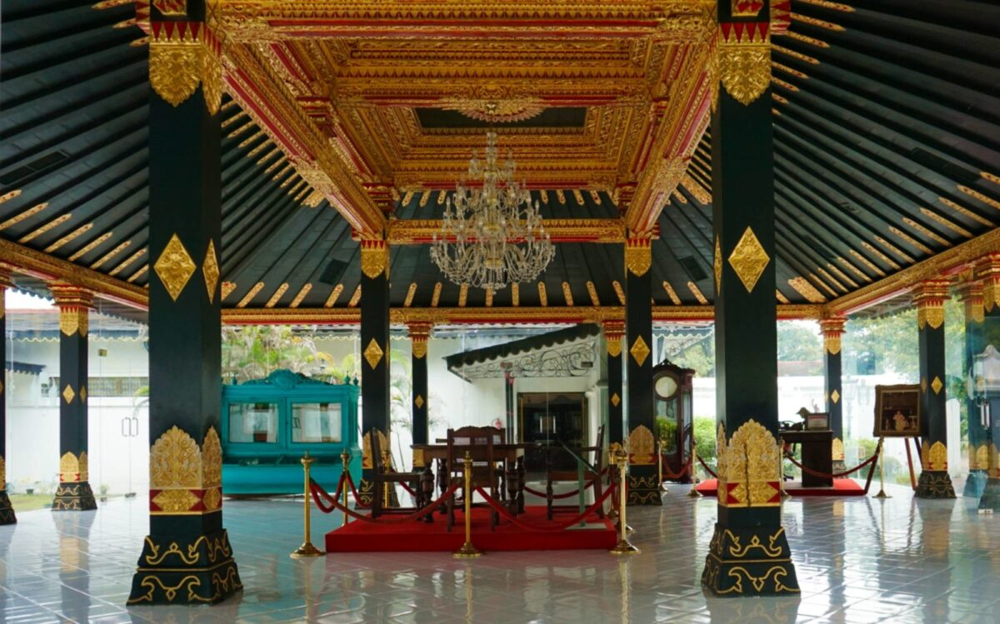

Keraton Yogyakarta
Keraton Ngayogyakarta Hadiningrat atau Kraton Jogja (carakan: ꦏꦫꦠꦺꦴꦤ꧀ꦔꦪꦺꦴꦒꦾꦏꦂꦠꦲꦢꦶꦤꦶꦔꦿꦠ꧀) merupakan istana resmi Kesultanan Ngayogyakarta Hadiningrat yang kini berlokasi di Kota Yogyakarta. Keraton ini didirikan oleh Sri Sultan Hamengkubuwana I pada tahun 1755 sebagai Istana/Keraton Yogyakarta yang baru berdiri akibat perpecahan Mataram Islam dengan adanya Perjanjian Giyanti. Keraton ini adalah pecahan dari Keraton Surakarta Hadiningrat dari Mataram Islam Surakarta (Kerajaan Surakarta).
📍lokasi:

Taman Sari
Taman Sari Yogyakarta (bahasa Jawa: ꦠꦩꦤ꧀ꦱꦫꦶꦔꦪꦺꦴꦒꦾꦏꦂꦠ, translit. Taman Sari Ngayogyakarta) adalah situs bekas taman istana Keraton Ngayogyakarta Hadiningrat. Taman istana ini dibangun pada zaman Sultan Hamengkubuwana I pada tahun 1758–1765. Kebun yang digunakan secara efektif antara 1765-1812 ini pada mulanya membentang dari barat daya kompleks Kedhaton sampai tenggara kompleks Magangan. Namun saat ini, sisa-sisa bagian Taman Sari yang dapat dilihat hanyalah yang berada di barat daya kompleks Kedhaton saja.
📍lokasi:

Candi Prambanan
Candi Prambanan (bahasa Jawa: ꦕꦟ꧀ꦝꦶꦥꦿꦩ꧀ꦧꦤꦤ꧀, translit. Caṇḍi Prambanan) adalah bangunan candi bercorak agama Hindu terbesar di Indonesia yang dibangun pada abad ke-9 Masehi. Candi yang juga disebut sebagai Rara Jonggrang ini dipersembahkan untuk Trimurti, tiga dewa utama Hindu yaitu dewa Brahma sebagai dewa pencipta, dewa Wisnu sebagai dewa pemelihara, dan dewa Siwa sebagai dewa pemusnah. Berdasarkan prasasti Siwagrha nama asli kompleks candi ini adalah Siwagrha (bahasa Sanskerta yang bermakna 'Rumah Siwa'), dan memang di garbagriha (ruang utama) candi ini bersemayam arca Siwa Mahadewa setinggi tiga meter, karena aliran Syaiwa mengutamakan pemujaan dewa Siwa di candi ini.
📍lokasi: